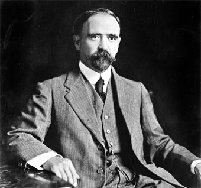
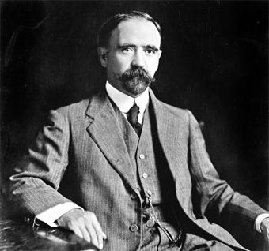

18 de Noviembre de 1910
El “Plan de San Luís”, proclamado por Francisco I. Madero, había señalado el 20 de noviembre de 1910 para levantarse en armas, pero dos días antes, Miguel Cabrera, jefe de policía de Puebla, acompañado de un pelotón de gendarmes intenta entrar a la casa de Aquiles Serdán, ubicada en Santa Clara 4, para catearla en busca de armas y propaganda. Ya en el mes de septiembre pasado, las autoridades habían cateado su casa y ante los rumores del levantamiento del día veinte, el jefe de la policía local llega con orden de cateo más minucioso; pero él, sus hermanos Carmen y Máximo, resistieron la orden.
Los hermanos Serdán y otras dieciocho personas más habían acumulado armas y parque para participar en la lucha revolucionaria y deciden enfrentar a los gendarmes a tiros. Filomena del Valle, esposa de Aquiles y Carmen Serdán, su hermana, salen al balcón de la casa con las armas en las manos y gritan a la gente que se ha reunido atraída por la balacera: “¡Poblanos! Los que están allí van a morir por el pueblo, vengan a ayudarles; aquí hay armas. ¡Viva la República!”.
El ataque de los gendarmes dura varias horas y el gobernador Mucio P. Martínez tiene que llamar a más de mil soldados para allanar la casa. Cuando se les acaba el parque los Serdán se rinden. Los soldados entran a la casa y se encuentran con algunas mujeres y los cuerpos sin vida de algunos hombres. Carmen Serdán, Carmen Alatriste, Filomena del Valle de Serdán y los que no murieron en el combate, son encarcelados. Carmen y Filomena son acusadas de recargar las armas, remitidas a la cárcel de La Merced y más tarde al Hospital de San Pedro.
Aquiles se esconde en una especie de sótano cavado en la sala de la casa, en la que apenas cabe un hombre.
En la madrugada del día siguiente, Aquiles toserá y será descubierto por el soldado que está de guardia, quien le hará dos disparos: uno en el cráneo y otro en la sien. El gobernador de Puebla, ordenará que su cuerpo sea exhibido en la plaza principal como escarmiento para quienes intenten acudir al llamado de Madero. Por este hecho, se considera que la Revolución Mexicana dio inicio en Puebla, con la represión a los hermanos Serdán.


 
